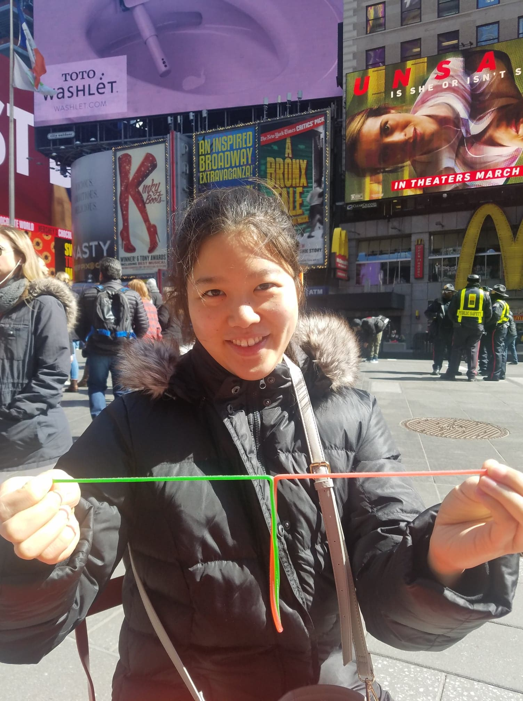
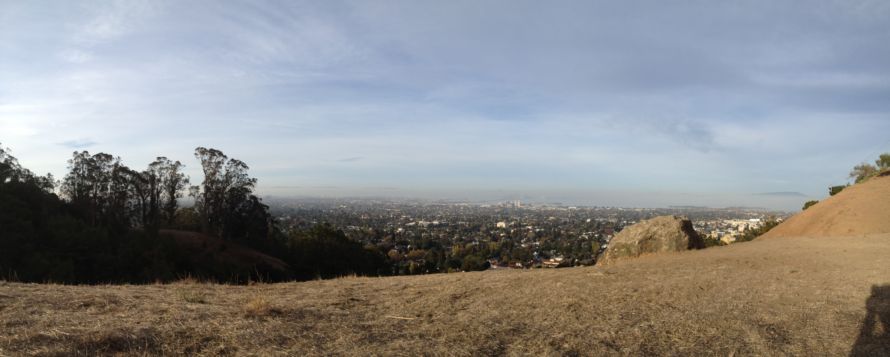
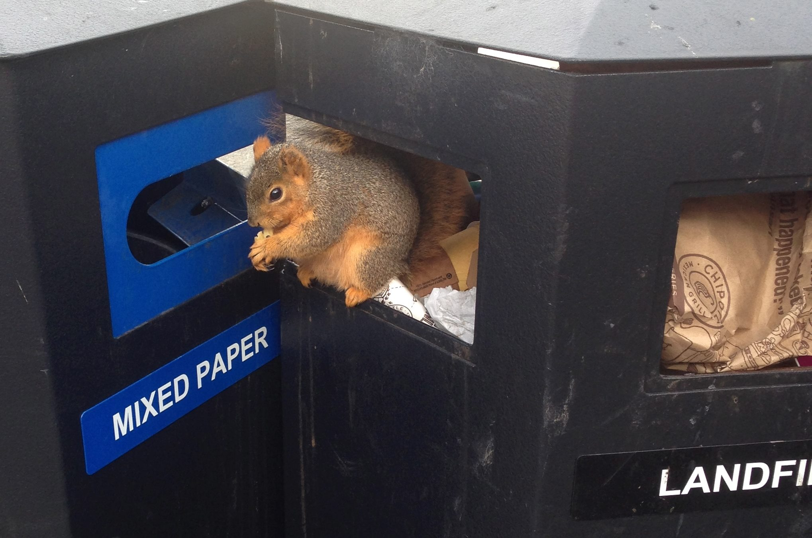

Fig.1 - Dissecting my food
I originally started as a biology major at UC Davis with an intent on pre-med.
At UC Davis I got involved in the Composting Club, a sustainability organization that collected food waste from on-campus
food vendors and made compost to sell back to the community.
We were a research and outreach club. We optimized the composting process by monitoring the compost temperature and microbial
makeup while educating the public on affordable means to compost.
At Davis, I learned that although I loved biology a lot, I truly enjoyed applying mathematics and engineering to biology.
I switched to chemical engineering because it was a versatile major that would give me the mathematical and modeling
background.
I transferred to UC Berkeley and got my bachelors in Chemical Engineering from UC Berkeley in 2017.

Fig.2 - I miss the Berkeley Hills.
During my undergraduate, I interned at Telegraph Green -- a sustainability non-profit. In this position, I negotiated with local
businesses to decrease their food packaging waste while encouraging customer engagement by suggesting discounts for people with reusable containers.
We also conducted campus trash audits to quantify what types of trash were ending up in the landfill and how much recyclable
trash (aluminum foil, recyclable plastics, glass, cans) was misallocated to the landfills.

Fig.3 - Berkeley Trash can with cute squirrel (Photo Credit: Jennifer Mcdougall).
My experience in Telegraph Green helped me realize that sustainability was complicated
by the lack of affordable alternatives.
I decided to go into research because I wanted to explore the type of research around sustainability and also
investigate microbial processes to mitigate waste accumulation.
Check out my resume to see how I've applied these passions to research in the past 6 years!
 625 Armenise, 210 Longwood Ave.
625 Armenise, 210 Longwood Ave.
 Boston, Massachusetts 02215
Boston, Massachusetts 02215
 ayshaw "at" g "dot" harvard "dot" edu
ayshaw "at" g "dot" harvard "dot" edu